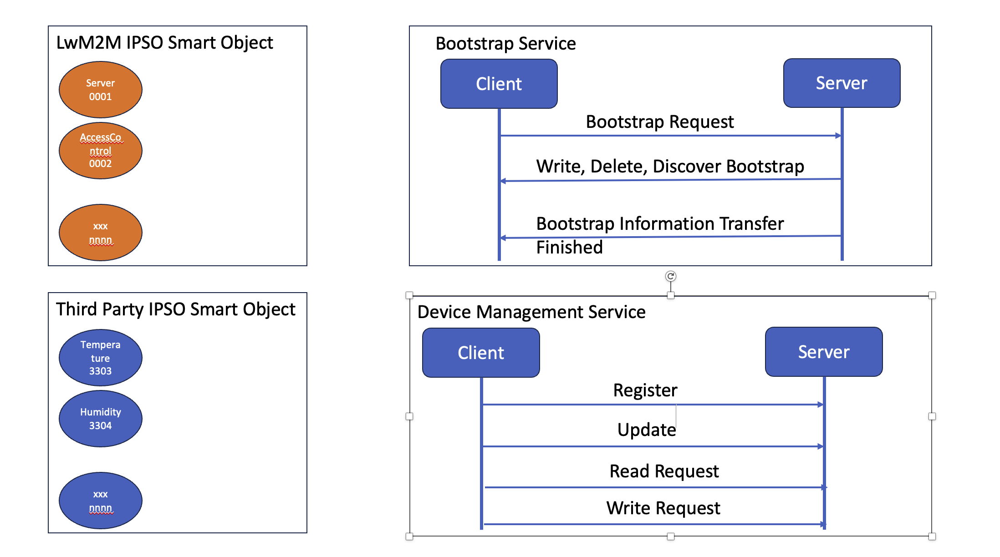
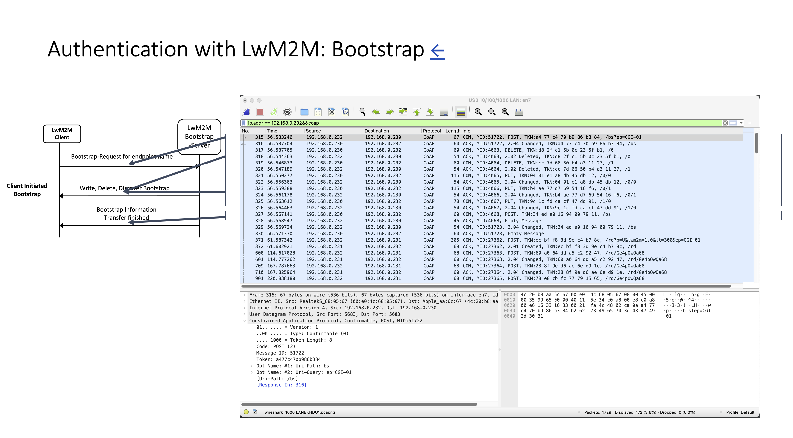
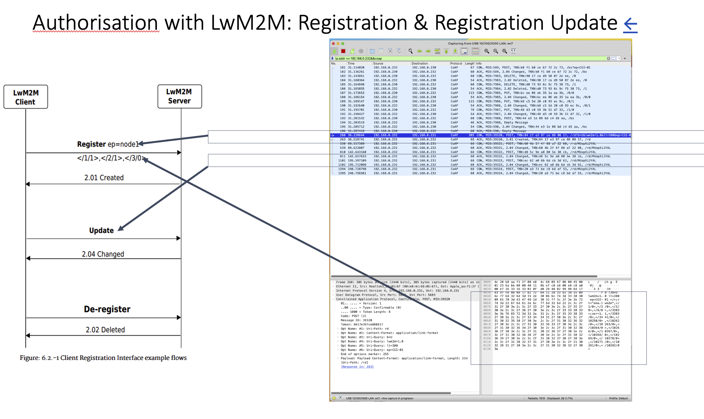

Grpc Skill
May 29, 2023
Introduction #
Hi everyone!
Here are some thoughts on the solution for protobuf and gRPC:
-
Set the Development Environment for
- Java: we start to setup the Java DevEnv to build up the confidence and know-how. The reasons are that we know Java Development come with two structures of building application MAVEN and GRADLE. We need to feel how gRPC works in the Java DevEnv. Refer to the URL link for detailed notes.
- C (more likely to be used for the firmware development than CPP), CPP (CPP in the wrong hand can cause issues in the firmware development): We have to dig deep into the memory lane to setup the CPP DevEnv. We start with CMAKE and LINUX. We need more time to study the BAZEL. Refer to the URL link for detailed notes.
- Go: We have not fully completed the Go DevEnv but we perform a quick test to build the HelloWorld and perform the interopability test between Go and CPP / Go and Java to ensure that the protobuf is doing what it actually documented.
- Python - Python (to be use for testing): we did some training with Python,
-
Test out the protobuf and the interoperability across java, go, python and cpp.
-
Testing out the interoperability between various environments (Java vs Go vs Python vs C/CPP)
-
We PoC the IoT
- Bootstrap - Device Authentication
- Registration and Registration Update - Device Authorization
- CRUD and O/N - Create, Remove, Update, Display and Observable/Notification on the smart objects



Bootstrap
syntax = "proto3";
import "lwm2m/OMA0000Security.proto";
import "lwm2m/OMA0002Device.proto";
package au.com.theitservice.iot;
option java_package = "au.com.theitservice.iot";
option java_multiple_files = true;
service BootstrapService {
rpc bootstrap(lwm2m.OMA0002Device) returns (lwm2m.OMA0000Security);
}
Registration and Registration Update
syntax = "proto3";
import "google/protobuf/timestamp.proto";
import "google/protobuf/any.proto";
package au.com.theitservice.iot;
option java_package = "au.com.theitservice.iot";
option java_multiple_files = true;
message MessagesRegistrationAnyObjectsRequest {
google.protobuf.Timestamp last_updated = 1;
repeated google.protobuf.Any omaObjects = 2;
}
message MessagesRegistrationAnyObjectsResponse {
google.protobuf.Timestamp last_updated = 1;
int32 stausCode = 2;
string statusMsg = 3;
}
service RegistrationService {
rpc registration(MessagesRegistrationAnyObjectsRequest) returns (MessagesRegistrationAnyObjectsResponse);
}
service RegistrationUpdateService {
rpc registrationUpdate(MessagesRegistrationAnyObjectsRequest) returns (MessagesRegistrationAnyObjectsResponse);
}
Or we may select to pass along the object name and we use the name to construct the smart object.
syntax = "proto3";
import "google/protobuf/timestamp.proto";
package au.com.theitservice.iot;
option java_package = "au.com.theitservice.iot";
option java_multiple_files = true;
message MessagesRegistrationRequest {
// List of messages to be requested for monitor
message RegisteredObject {
int32 objectId = 1;
string objectName = 2;
}
repeated RegisteredObject registerObjects = 1;
}
message MessagesRegistrationResponse {
// Acknowledge that messages to be monitored
message RegisterStatus {
int32 code = 1;
string statusMsg = 2;
}
}
service RegistrationNameObjectsService {
rpc registrationNameObjects(MessagesRegistrationRequest) returns (MessagesRegistrationResponse);
}
service RegistrationUpdateNameObjectsService {
rpc registrationUpdateNameObjects(MessagesRegistrationRequest) returns (MessagesRegistrationResponse);
}
**CRUD and O/N (to be specified) **
syntax = "proto3";
package au.com.theitservice.iot;
option java_package = "au.com.theitservice.iot";
option java_multiple_files = true;
import "google/protobuf/timestamp.proto";
import "google/protobuf/any.proto";
message ObjectRequest {
google.protobuf.Timestamp last_updated = 1;
repeated google.protobuf.Any omaObjects = 2;
}
message ObjectResponse {
repeated google.protobuf.Any omaObjects = 2;
}
service CRUD {
rpc postObject(ObjectRequest) returns (ObjectResponse);
rpc getObject(ObjectRequest) returns (ObjectResponse);
rpc putObject(ObjectRequest) returns (ObjectResponse);
rpc deleteObject(ObjectRequest) returns (ObjectResponse);
}
service ChangeNotification {
rpc changeNotify(ObjectRequest) returns (ObjectResponse);
}
OMA #
grpc and IDL #
grpc with java #
Study Development Environment Development Tool
grpc with golang #
Study Development Environment Development Tool
grpc with python #
Study Development Environment Development Tool